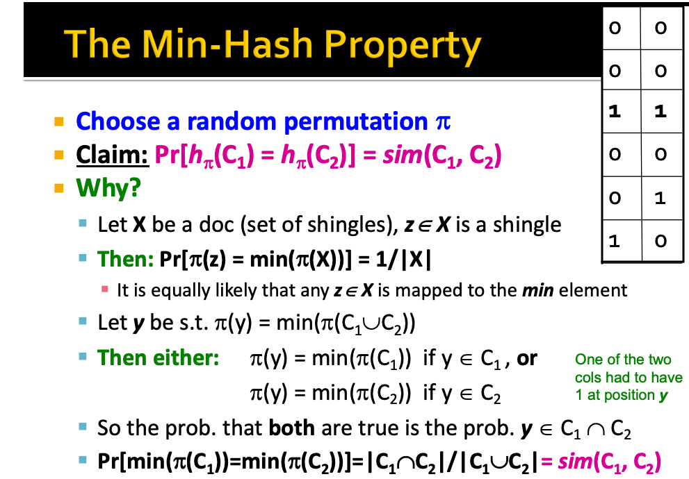

Intro
(Motivation, Applications in Appendix 1.1)
Locality Sensitive hashing solves the problem of nearest neighbours in high dimensions in O(N) time. The idea is very similar to Bloom Filters.
Goal: Given many high dimensional data points (x1,x2,...) and some distance function d(x1,x2), find all pairs of data points (xi,xj) that are within distance threshold d(xi,xj)<s, without expending O(N2) time.
- In general, one hashes items in to buckets using several different ‘locality-sensitive hash functions’. You examine only those pairs of items that share a bucket for at least one of these hashings ("similar candidates").
- Upside: Designed correctly, only a small fraction of pairs are ever examined.
- Downside - You have some false negatives, some pairs never get considered. Thats ok.
Suppose we need to find near-duplicate objects among N= 1 million objects. The process for LSH is the following:
- [Preprocessing] Feature Extraction - Convert object (document/image) into compact sets of features. In documents, this can be done by applying n-gramming and then a similarity preserving hash (minhash) as dimensionality reduction. (* * Handled in Appendix 1.2)
- Locality-sentive hashing: Use a hash function that hashes the features and tells whether two documents x and y is a candidate pair: a pair of elements whose similarity must be evaluated.
Locality Sensitive Hashing
Families of Hash functions
In this setting, we assume that the data exists in some metric space.
(Appendix 1.2 describes how to get the feature matrix for documents through using n-grams as features. In this case the data representation as a feature matrix M, where rows = feature ids, columns = object ids.)
Suppose d is the distance function in a metric space and x,y are objects (like documents) in the same space.
Def: A family of hash functions is any set of hash functions form which we can pick one at random efficiently.
Def: A family H of hash functions is said to be (d1,d2,p1,p2)-sensitive if for any x and y in S:
1. If d(x,y)<d1, then the probability over all h in H that h(x)=h(y) is at least p1
2. If d(x,y)>d2, then the probailitiy over all h in H that h(x)=h(y) is at most p2.
We want to stretch p1 to be close to 1 and p2 close to 0, and we want to squeeze d1 and d2 to be close to each other at some distance threshold T. (Img 1)
AND and OR to combine hash functions
Given a (d1,d2,p2,p2) sensitive family of hash functions, the AND operation turns it into a (d1,d2,pr1,pr2) sensitive family, and the OR operation turns it into a (d1,d2,1−(1−p1)b,1−(1−p2)b) sensitive family. AND and OR can be used together to turn any family of has functions into one where p1 is almost 1 and p2 is almost 0.
See Appendix 1.3 for an example of AND and OR using the min-hash function on our document signatures example.
AND - Apply intersections of hash functions. All hash functions must hash to the same bucket.
Given family H and some value r, construct family H′ containing r functions from H. For h=[h1,…,hr]∈H, we way that h(x)=h(y) if and only if h(x)=hi(y) for all i∈1,...,r.
Property of AND: If H is (d1,d2,p1,p2) sensitive, then H is (d1,d2,pr1,pr2) sensitive.
Note: p1 getting smaller is bad for us, this is lowering the probability for the smaller distances. p2 getting smaller is good, it is lowering the probability of large distances. AND makes both p1 and p2 shrink, but by choosing r correctly, we can make the lower prob approach 0 while the higher one does not.
OR - Apply union of has functions
Given family H amd some value b, construct family H′ containing b functions from H, such that For h=[h1,…,hb]∈H, h(x)=h(y) iff hi(x)=hi(y) for at least one i.
Property of OR: If H is (d1,d2,p1,p2) sensitive, then H' is (d1,d2,1−(1−p1)b,1−(1−p2)b) sensitive
Note: p1 getting larger is good for us, it raises the prob of small distances, p2 getting larger is bad for us, it raises the probability for large distances. OR makes both p1 and p2 grow, but by choosing r correctly, we can make the higher prob approach 1 while the lower does not.
How to pick r and b
We often fix the total number of hash functions n, so n=rb, thus picking one will determine the other. By choosing r and b correctly, we can make the lower probability approach 0 while the larger approaches 1. We can apply AND and OR in any order, the operation is commutative.
- Pick any two distances d1,d2,s.t.d1<d2 and start with a (d1,d2,(1−d1),(1−d2)) family
- Apply constructions to amplify into a (d1,d2,p1,p2) sensitive family, where p1 is almost 1 and p2 are almost 0. The curve we plot for the function is 1−(1−sr)b (Img 3)
Keep in mind: In many applications, we can accept false positives, but false negatives are lost to us forever. We would often rather have more false positives. (Img 2)
LSH for Different Distance Measures
Jaccard distance - minhash
Jaccard distance is the distance measure over sets, and it is 1-JaccardSimilarity, the intersection-over-union similarity measure for sets.
A locality-preserving hash function for the Jaccard distance (on sets) is the min-hash function.
Min-hash overview: Pick k (say, 100) hash functions hi, each of which simulates a random "permutation" π over the features. Define the minhash function hπ(C) of object C as follows: hπ(C) = the rank of the first (in the π-permuted order) row in which column C has value 1. For each hash function, the minhash function produces a different unique signature for each object. The result is condencing the object features matrix into a matrix of object signatures:
- Rows = minhash values for each permutation π. (3)
- Columns = objects (documents)
(Pseudocode and notes in Appendix 1.2.1)
Cosine distance - random hyperplanes
(Img 4)
Cosine Distance = angle between vectors from the origin to the points in question
- polar version: d(A,B)=θ=arccos(A⋅B)/|A|⋅|B|
- general version: d(A,B)=θ=A⋅B/|A|⋅|B|
LSH for cosine distance: random hyperplanes is a (d1,d2,(1−di/π),(1−d2/π)) sensitive family for d1 and d2
- Every vector v determines a hash function hv which determines two buckets (returns +1 or -1) as follows: hv(x)={+1 if v⋅x≥0−1 if v⋅x<0
- This is essentially, in which part of the hyperplane determined by (orthogonal to) v does x lie?
- The LSH-family H - set of all functions derived from any set of vectors v1,v2,…
- For points x and y, Pr[h(x)=h(y)]=1−d(x,y)/π.
Process: Pick some number of random vectors v with norm 1 on the unit sphere, and hash your data for each vector. The result is a signature (sketch) of +1s and -1s for each data point. Amplify using AND and OR constructions.
LSH for Euclidean Distance - project on lines
(Img 5)
Project on lines is a (a/2,2a,1/2,1/3) sensitive family of hash functions for any a.
Idea: Hash functions correspond to lines. Partition the line into buckets of size a. Project each point onto the line to see which bucket it falls into. An element of the ‘signature’ is the segment's bucket id. Nearby points are always close, distant points are rarely in the same bucket.
Project On Lines is a (a/2,2a,1/2,1/3) sensitive family of hash functions for any a, because if points are distance d≤a/2, prob that they are in the same bucket ≥1−d/a=1/2.
- If the points are far apart - d>2a apart, then they can be in the same bucket only if dcos(θ)≤a
- Since cos(θ)≤1/2 implies that 60<θ<90, ie, θ falls within the rage at at most 1/3 probability. (Img 6)
Process: Pick random lines, project the points on them, and hash your data to each bucket. Amplify the hashing using AND and OR functions.
Appendices:
Appendix 1.1: Motivation and Applications for LSH
Motivation for LSH
Many problem can be expressed as finding ‘similar sets’, that is, find near-neighbnors in high-dimensional space. How can you do this at scale? How do you do similar image search over billions of items in real (constant) time? (i.e. Pinterest does this)
LSH is a brilliant use of hashing (Jure: The most brilliant), very important and part of the buildup to recommender systems.
Applications of LSH
- Web Pages With Similar Words: (near duplicate detection, classification by topic)
- Recommender System Applications: (Customers who purchased similar products, Products with similar customer sets)
- Image/Video Similarity (Pinterest - Similar Image Search, Image Completion)
Implementations: TLSH for documents, Nilsimsa for anti-spam
Appendix 1.2: Feature Extraction Case Study: Text Documents (N-gramming)
This step is different for different types of objects (text/image etc). An approach is presented for documents:
For text documents, feature extraction is performed with n-gramming, often using n=8,9,or10. An n-gram (n-gram) for a document is a sequence of n tokens in the doc. To compress the huge set of possible n-grams, we hash them to (say) 4 bytes, and we represent each document as a column vector containing the set of n-shingle hash values (we ignore duplicate shingles and hash collisions). This forms a matrix M, with
- Rows = features (hashes of shingles)
- Columns = objects (documents)
Note that since we are representing documents as bags of n-grams, the similarity is given by Jaccard Similarity ("intersection over union"). Jaccard distance is 1-Jaccard Similarity. If we were doing images, a different method would apply (use image embeddings out of a neural network).
(Detailed Example:)
- Example:
- k=2; document D1 = abacb (1)
- Set of 2-singles S(D_1) = {ab, bc, ca}.
- Hash the shingles h(D_1)= {1,5,7}
If we use 10-grams on a vocab of 105, we have 1050 shingles, which is way too much. But you don’t work with raw shingles, you hash them to some ids, and ignore the collisions.
- Similarity between the shingles uses Jaccard Similarity
jaccard_sim$(D_1,D_2)$= |C_1 n C_2|/|C_1 u C_2| intersection / union.Jaccard distance is 1- Jaccard Similarity.
Appendix 1.2.1: Min Hash
# In the below implementation M(i,c) keeps track of the min_hash value of hash function i on document c so far. `M(i,c)` is initialized with entries equal to `∞`.
for each row r:
for each hash function hi:
compute hi (r);
for each column c
if c has 1 in row r
for each hash function hi
if hi (r) < M(i, c) then
M(i, c) := hi (r);
